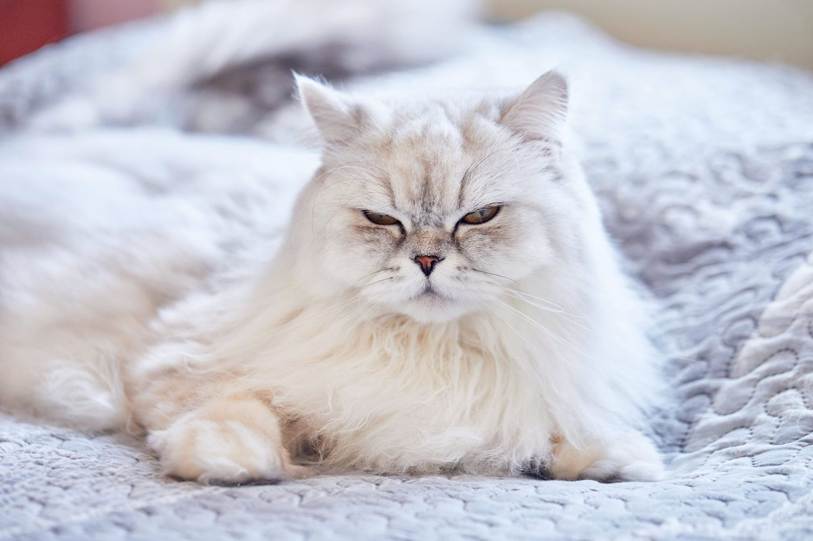
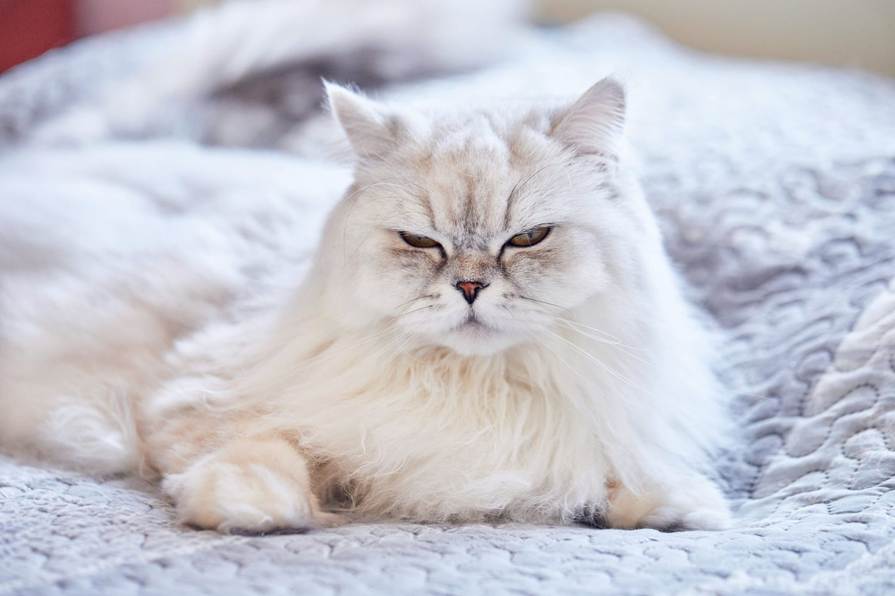

Jack the dog

Jack is a 1 year old labradoodle. Jack is a bundle of energy and playfulness. He approaches life with an infectious enthusiasm that makes everyone around him smile. His favorite pastime is play, and he's always up for a game of fetch or chase. He'll eagerly chase after a tennis ball, bringing it back with a wagging tail and a joyful expression, ready for another round.
Jack is a social dog, and he adores being around people and other dogs. His friendly disposition makes him an instant hit at the dog park, where he happily engages in playdates with his four-legged friends.
Likes
- Stuffed toy pizza
- Bacon
- Sleeping on the couch
Photo Gallery


Sixteen
Sixteen a 1 year old British Longhair cat. She likes to run at midnight and sleep all day. She loves chicken breast. If you touch her toes, she will be very angry. She will bite you. She is also protective about her tail, please do not touch it if you want to be her friend.
When she is happy, she is very playful and friendly! Also, she loves lounging in the sun! Sixteen is a huge fan of treats - she has even learned how to open doors to steal some extra treats. Sometimes Sixteen has boundless energy. It usually takes her another hour to settle down after a long day out before she can take a long nap
Likes
- Chicken breasts
- Playing the staring game
- Toy mouse
Photo Gallery
 

Lulu

Lulu is a lively guinea pig who enjoys eating carrots and peppers. When not given any carrots or peppers she will squeak.
Lulu is very adventurous, she will explore her surroundings looking for food and is not afraid.
Likes
- Peppers
- Carrots
- Sleeping
Photo Gallery


Cody

Cody is a 7yr old Pembroke Corgi. He was born in Cavalier Farms, Seattle. He prefers to spend his days lounging on the bean bag. Every day, he enjoys two walks around the neighborhood and likes to make friends with other doggie friends. If lucky enough, he might see the cyclist, but he is not allowed to give chase.
Cody loves traveling. He enjoys walking on the beach and taking sun naps. But he hates cold weather. He would like to stay at home lounging by the fireplace in winter.
Likes
- Traveling
- Lounging
- Tennis balls
Photo Gallery


Daisy

Daisy is a 14 year old Golden Retriever. Some of her nicknames include Daisy Duke and Slipper. Her favorite human foods is popcorn and she is terrified of vacuum cleaners.
Likes
- Sunbathing
- Squishmallows
- Napping
Daisy enjoys helping her mom work, taking naps on the fireplace, and playing with her laser toy.
Photo Gallery